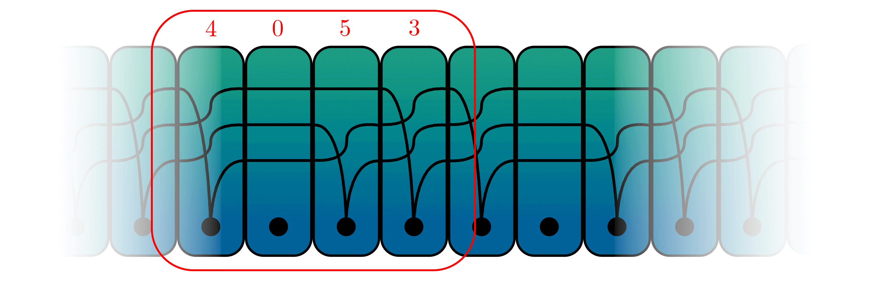
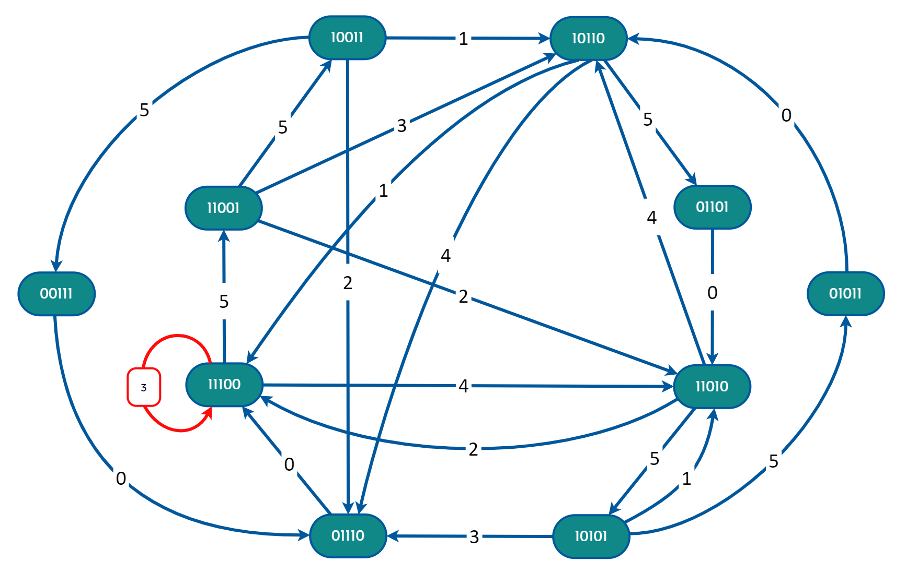

TIPE — Juggling
Sequence Enumeration
How many distinct juggling sequences exist? A graph-theoretic answer — built from scratch in Python.
Juggling has been studied mathematically since the 1980s. The question that drove this TIPE was deceptively simple : given b balls, a maximum throw height H and a sequence period t, how many valid juggling sequences exist ?
The answer requires formalising what "juggling" even means mathematically. The standard tool is siteswap notation — a way of encoding throw sequences as integers, where each number represents the number of time steps a ball stays in the air before landing.
A sequence like 4 0 5 3 means: throw to height 4, then no throw (0), throw to height 5, throw to height 3. Each integer encodes both the throw height and whether the ball crosses hands (odd = crossing, even = direct). The average theorem guarantees validity : a sequence is jugglable if and only if its mean is an integer equal to the number of balls.

SITESWAP SEQUENCE 4053 — VISUALISED WITH JUGGLING CARDS, A TOOL WHERE EACH CARD ENCODES ONE THROW
The key insight is to represent the juggler's situation at any moment as a state — a binary vector of length H containing exactly b ones, where position i indicates whether a ball will land in i time steps.
For example, state [0, 1, 1, 0, 0] (b=2, H=5) means two balls are in the air : one lands in 2 steps, another in 3 steps.
Each valid throw transitions the juggler from one state to the next. This naturally defines a directed graph — the juggling graph — where nodes are states and edges are valid throws.
A juggling sequence of period t then corresponds exactly to a closed path of length t in this graph. Counting sequences reduces to counting closed paths.
Generate all states
All binary vectors of length H with exactly b ones — that's C(H, b) states.
Build the adjacency matrix
For each state, compute all valid next states. Entry M[i][j] = 1 if state i can transition to state j.
Iterate the matrix
Mk[i][i] counts closed paths of length k starting and ending at state i. tr(Mk) counts all of them.
Remove cycles and repetitions
Subtract sequences that are rotations or multiples of shorter ones — using a divisor-based formula.

The formula exploits the multiplicative structure of the divisors of t. For each d strictly dividing t, all closed paths of length d are also counted in tr(Mt) — so we subtract them recursively.
This is structurally related to the Möbius inversion on the divisor lattice — a classical tool in combinatorics that here has a direct physical interpretation: stripping out juggling patterns that are "just repetitions" of simpler ones.
Division by t removes cyclic equivalence: the sequences 135, 351, and 513 all represent the same physical juggling pattern.
# State: binary vector, 1 = ball landing at position i def next_state(state, throw): shifted = state[1:] + [0] if throw == 0: return shifted, throw # no throw elif shifted[throw - 1] == 1: return [], throw # collision — invalid else: shifted[throw - 1] = 1 return shifted, throw # Adjacency matrix via state transitions def adjacency_matrix(num_balls, max_height): states = all_states(num_balls, max_height) matrix = [] for state in states: row = [0] * len(states) reachable, _ = all_next_states(state) for next_s in reachable: row[states.index(next_s)] = 1 matrix.append(row) return np.array(matrix)
# Counting formula — remove cycles & repetitions def new_patterns(adj_matrix, max_period): counts = [] for period in range(1, max_period + 1): trace = matrix_trace(matrix_power(adj_matrix, period)) for d in divisors(period): trace -= counts[d - 1] # subtract shorter patterns counts.append(trace) return counts # Random valid sequence generator def random_pattern(num_balls, max_height, period): sequences = census_filtered(num_balls, max_height, period) return sequences[random.randint(0, len(sequences) - 1)] # Example output >>> random_pattern(3, 5, 3) → '234' >>> random_pattern(4, 6, 5) → '06662'
SOURCE CODE
Full implementation on GitHub — graph construction, state enumeration, sequence counting.